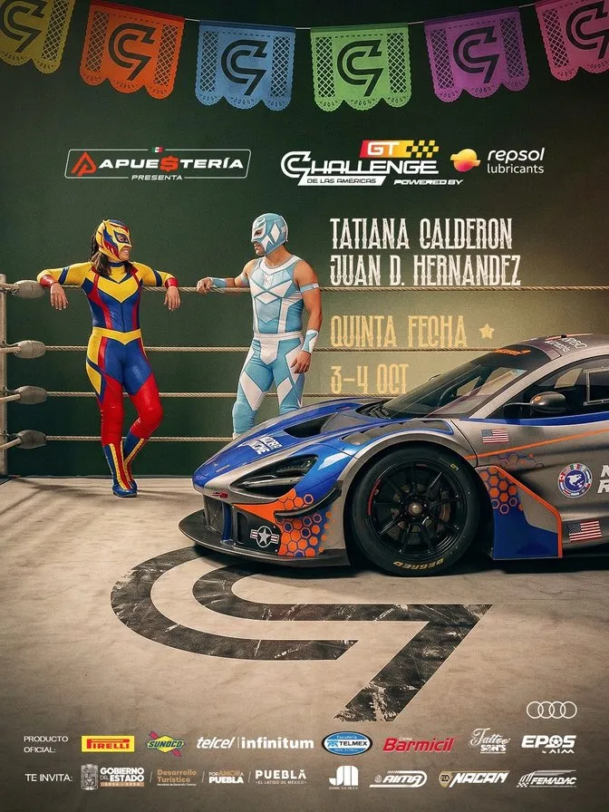
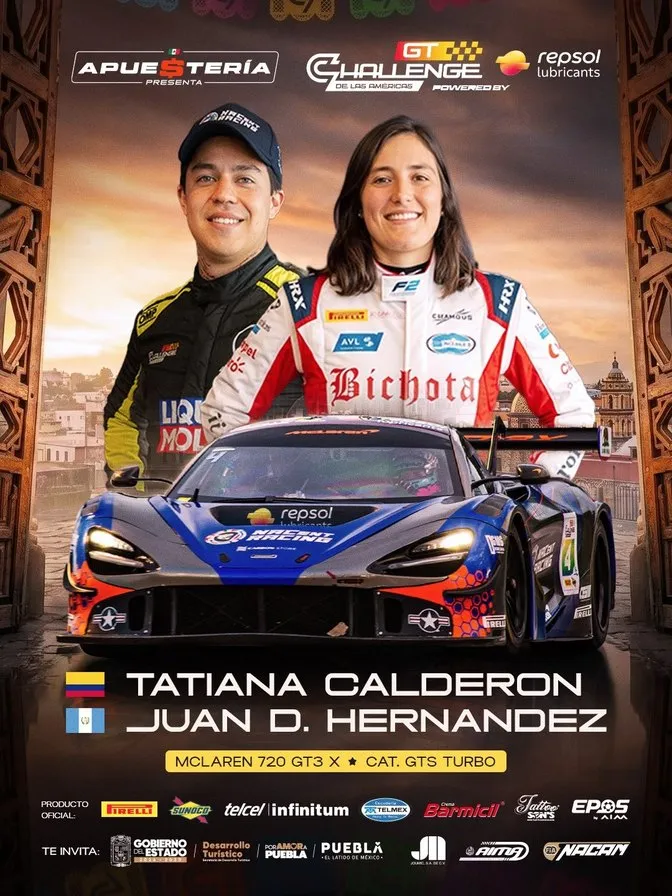
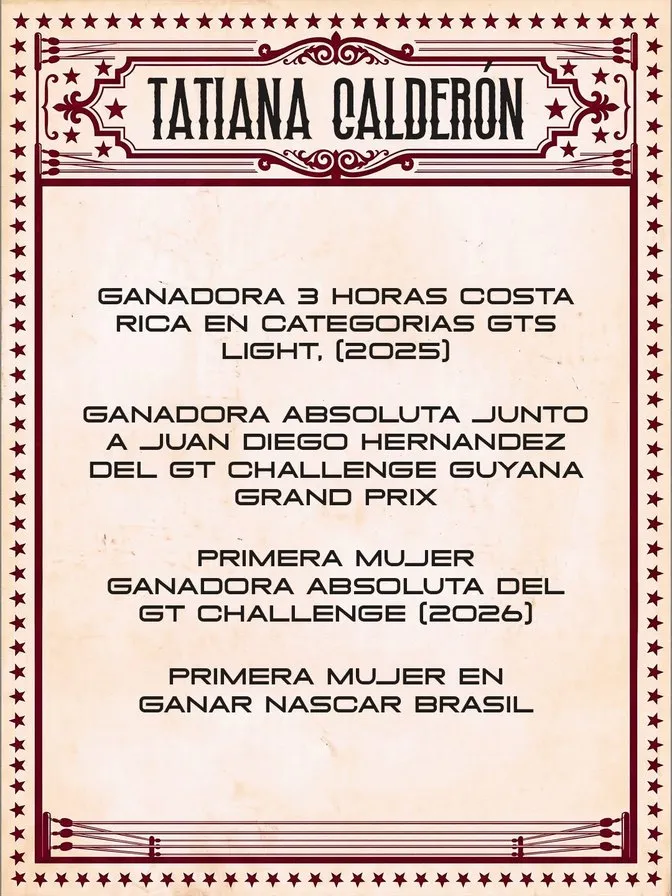
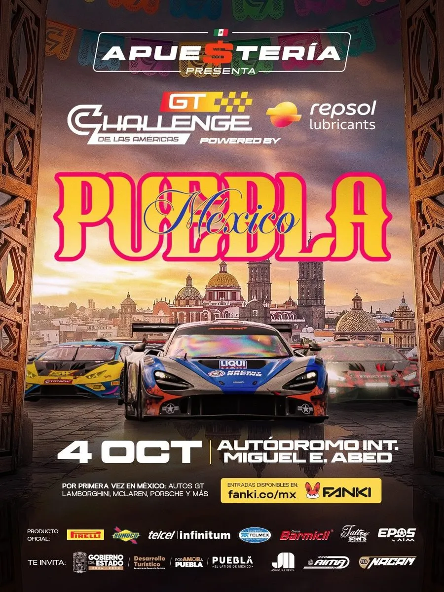
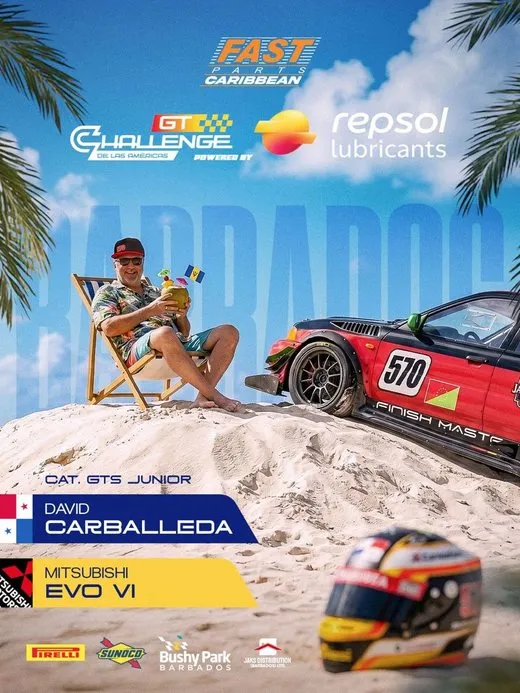
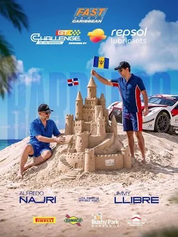
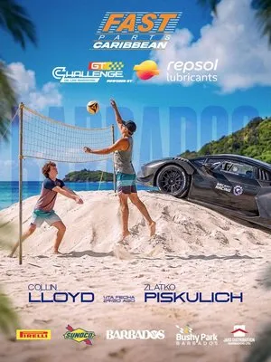
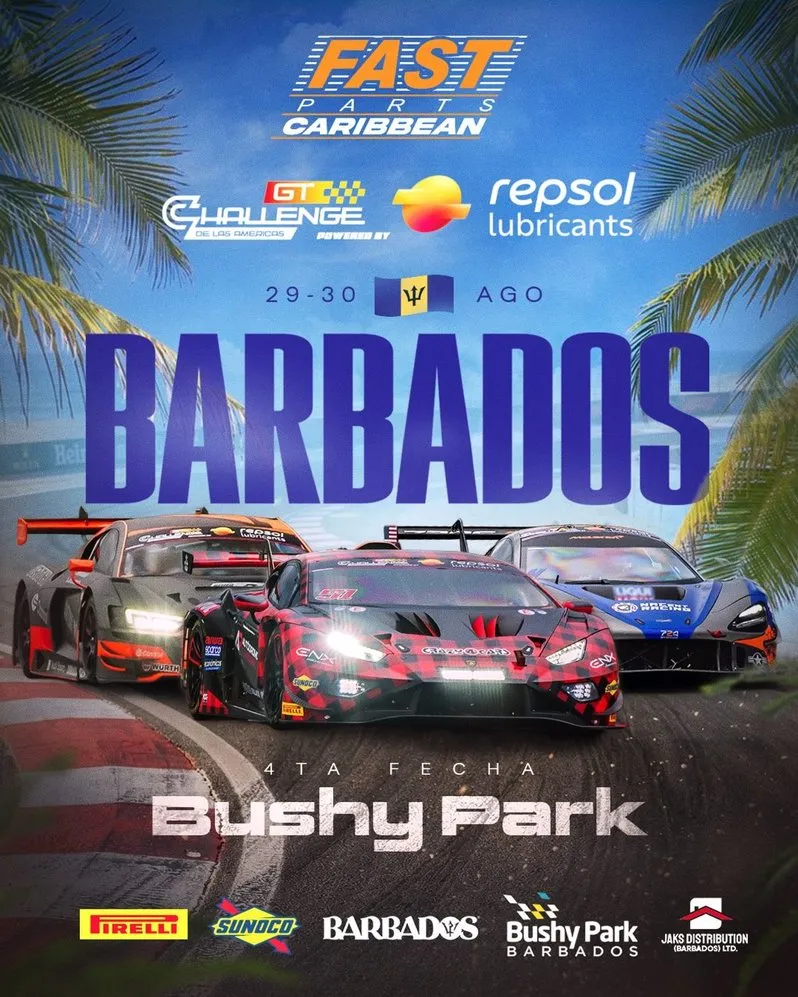

Tu evento también es un producto comercial
Campeonatos, clubes y federaciones: comunicación, cobertura y comercialización con una metodología de cuatro momentos. Cada momento genera activos que un auspiciante puede comprar.

Cuatro momentos
Narrativa del campeonato, piezas de convocatoria y dossier para auspiciantes con espacios y contraprestaciones.
Presentación de participantes, marcas presentes y contenidos de arranque para prensa y redes.
Formatos verticales, resultados, historias de competidores y presencia de marca en el lugar.
Video resumen, galería, informe de alcance y evidencias para cada auspiciante.
- Plan de comunicación del evento
- Cobertura audiovisual y fotográfica
- Dossier comercial con espacios valorizados
- Gestión y reporte para auspiciantes
- Archivo editado para prensa y federaciones
- Proyectos cotizados según alcance, sedes y días de producción
- Reunión de planificación previa obligatoria
- Entrega de material editado hasta 10 días después del cierre
- Gastos de viaje y hospedaje fuera de la ciudad no incluidos
- Uso del material acordado por escrito con la institución
Un campeonato
que llega antes
que sus autos
Gestionamos la estrategia de comunicación digital del campeonato GT de Latinoamérica: un torneo que corre en varios países y una audiencia que crece fecha a fecha en más de cinco. Concepto creativo por sede, protagonistas, venta de entradas, aliados y cobertura en vivo: antes, durante y después de cada carrera.
Estrategias que generaron impacto
La identidad abre la conversación; estas acciones la convierten en audiencia, asistencia y valor para cada auspiciante.
107 publicaciones de 39 perfiles junto al campeonato: tres veces más alcance que las piezas oficiales.
Cada piloto, una pieza con la identidad de la sede: luchador en Puebla, de vacaciones en Barbados.
Ruedas de prensa en Puebla y Ciudad de México, activaciones en universidades, karting con Tatiana Calderón y firma de autógrafos.
Boletería con Fanki integrada en 31 publicaciones; cuatro locaciones agotadas antes de la qualy.
Publicado junto a @rsl_racing el día de carrera: el mayor pico de la cuenta, 2,83M de visualizaciones en dos días.
IG + FB: +3.555 en Barbados y +4.981 en Puebla. La audiencia mexicana en Facebook se multiplicó por 2,5.
Seguidores en más de cinco países
Distribución de la comunidad de Instagram del campeonato. La carrera se transmitió en seis señales: Telemundo, Claro Sports, WIN Sports, REV, TVC Deportes y YouTube oficial.
Cada destino, su propio lenguaje
El campeonato es uno, pero cada fecha tiene un concepto, una paleta y un sistema de piezas propio. Elige la fecha y toca cada fase.
Tradición, lucha libre y alto octanaje
Para la llegada a México construimos una identidad propia: el pueblo mexicano como escenario y la lucha libre como lenguaje. Los pilotos se convierten en luchadores enmascarados, el ring es la pista y el papel picado lleva el logo del GT.




El teaser del cactus abrió la conversación sin nombrar la sede. Siguieron el lanzamiento oficial y ruedas de prensa en Puebla y Ciudad de México; todo dirigía a la venta de entradas.
Caribe, arena y alto octanaje
Para Barbados llevamos a los pilotos a la isla antes de que llegaran a la pista: cada confirmación se volvió una postal de playa y cada piloto, un protagonista de vacaciones con el casco en la mano.




El teaser del coco, “Velocidad, sol y playa” y 19 presentaciones de pilotos, cada uno con una actividad de playa distinta.